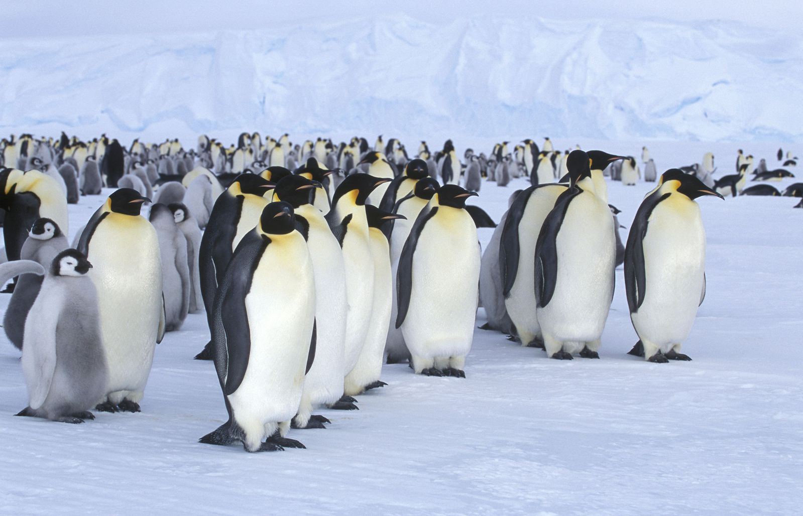
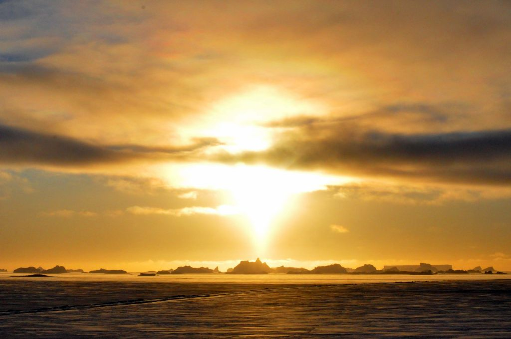
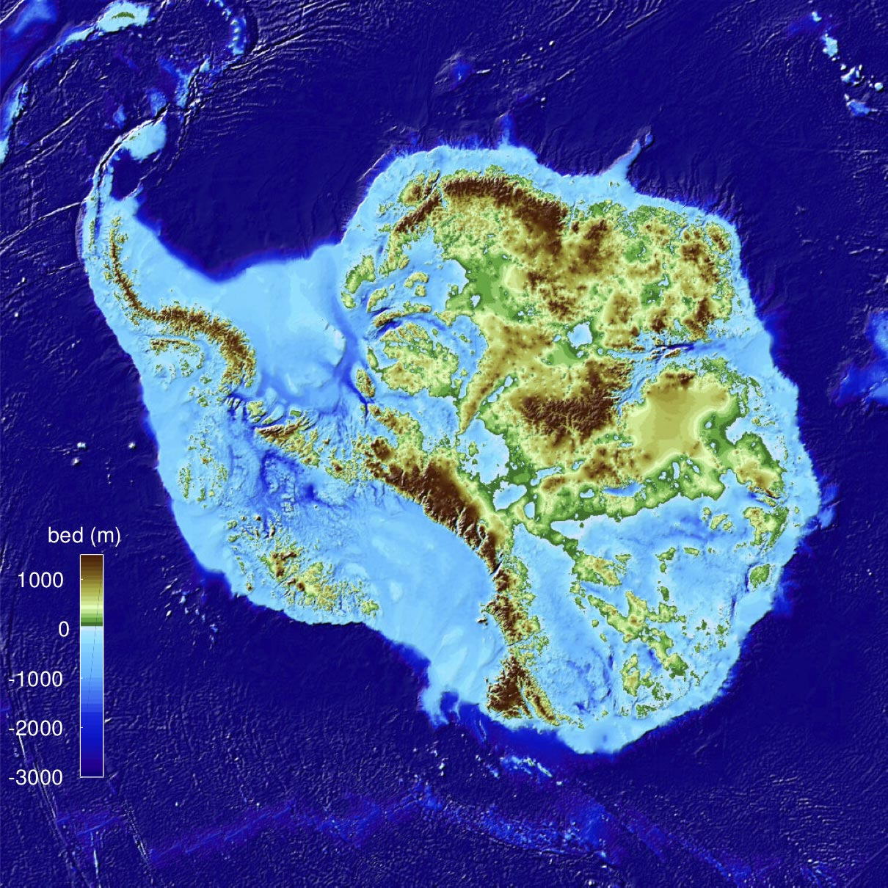
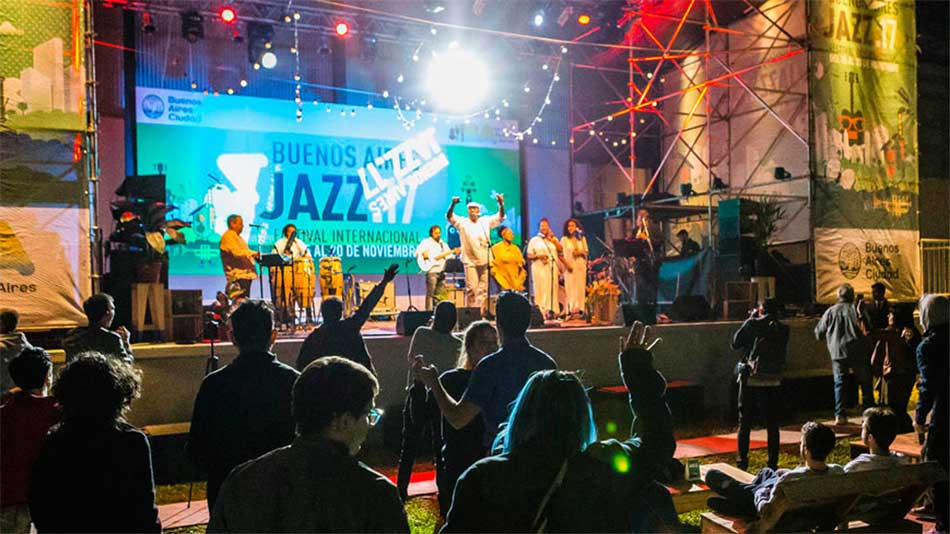

Welcome to the United States Antartic Program Portal
Future usap
The latest information on the usap master plans and their implementation.
Recent Tweets
NSF Social Media
NPR Host Gets Tips from Antartica for How to Stay Warm During the Bomb Cyclone
News / Friday January 5, 2018
The bomb cyclone
has hit the eastern U.S. causing
flight cancelations and power outages. On Jan. 5, Keri
Nelson, at NSF's Palmer Station, Antartica, discussed with
All Things Considered host Ari Shapiro...
usap Station Webcams
Live images from Antartica
Program Announcements
Most recent
Jan 31, 2018
Policy Against Harassment Affirmed
The Office of Polar Programs (OPP), which manages the U.S. Antartic
Program, has issued a policy statement that affirms that the program
is committed to providing a safe and respectful work environment,
free of any form of harassment.
Jan 24, 2018
MacDonald joins Antartic Infrastructure and Logistics Section
Brian MacDonald has joined OPP's Antartic Infrastructure and Logistics (AIL) Section as Capital Planning Manager. MacDonald wil work closely with AIL experts to implement a long-range capital plan to insure the nation's Antartic stations to continue to support world-leading science well into the future.
Dec 19, 2017
NSF seeks Program Director, Artic systems Sciences Program: Applications Due January 29
The NSF is seeking a qualified candidate to fill the position of Program Director for the Artic Sciences Section (ARCSS) Program in the Office of Polar Programs (OPP), Directorate for Geosciences(GEO) in Alexandria, VA. The Office of Polar Programs is responsible for planning, funding, and implementing scientific research programs in both the Artic and Atartic regions.
Media
usap photo library
View current and historical photos profiling science, scenery, wildlife, and more at the usap Photo Library.
The Antartic Sun
The Antartic Sun is the official source for news of the United States Antartic Program and US Antartic Stations.
Features
Special report
Take a look at the National Science Foundations's plans for the future of science and logistics in Antartica.
- McMurdo Station Master Plan (updated, Jan 29, 2016)
- Palmer Station Master Plan (new, Feb 2, 2016)
- More and Better Science in Antartica
- NSF Blue Ribbon Panel Response
Featured Article
Video: International Jazz Day is Celebrated at South Pole Station
Contact Us
Site Information
Curator: Webmaster, Antartic Support Contact | NSF Official: Patrick Smith, Office of Polar Programs